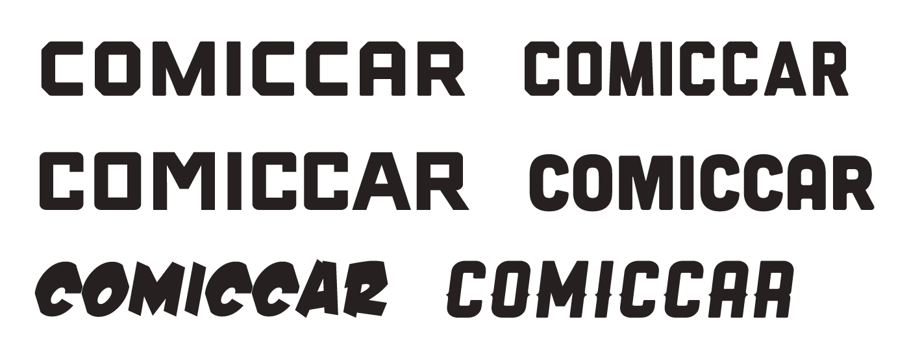

This is an email header created for a Sidecar promotion we ran during ComicCon in San Diego, CA. While I was pleased with the character of the final piece it ended up not performing well in the field. This was due to my lack of understanding of Facebook's guidelines for marketing images. If an image contains more than X% text it's flagged and not distributed as broadly. It's always a bummer when that something like that happens but you live and you learn.
Below are a few different typefaces that I looked at when figuring out what direction to take this piece. A lot of them were chosen because they felt like faces that could live on a comic book but ultimately I went with this one.
